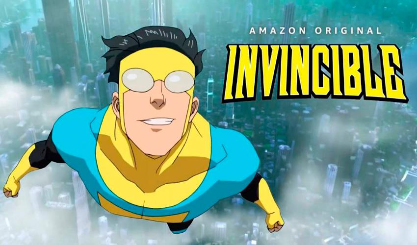

El protagonista de la historia es Mark Grayson, un adolescente normal y corriente si no fuera porque su padre Nolan en realidad es el superhéroe más fuerte de la Tierra. Al cumplir los diecisiete, sin embargo, Mark empieza a desarrollar sus propios poderes, lo que le coloca en una buena posición para convertirse en superhéroe como su padre en un planeta donde no faltan uniformados ni tampoco villanos dispuestos a destruir la ciudad cada dos por tres. Pero esta nueva etapa estará marcada por un suceso traumático: los principales superhéroes de los Estados Unidos son brutalmente asesinados, su padre sale malherido y una nueva generación de superhéroes adolescentes pasan al primer plano. Para quienes decidan ver la serie, un detalle importante: no es para niños. Invencible parece una serie de animación convencional y de perfil juvenil hasta que termina el episodio piloto y Kirkman se reserva una escena sorpresa después de los títulos de crédito (que se puede ver en este enlace). Allí pone toda la carne en el asador (y por carne se entienden extremidades, cabezas trituradas, intestinos y cualquier masa de la que esté compuesto el ser humano) para declarar a su manera que Invencible es una serie pasada de rosca que destruye cualquier limitación que hubiéramos imagino del género de superhéroes.
Fuente: LaVanguardia.com
by Leonardo Meza